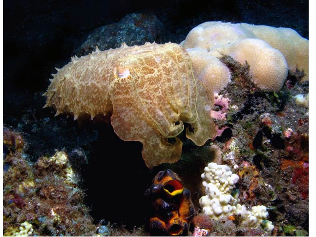

			  
			  
			  
              <DIV align="center"><!-- RRS4 <A href="javascript:Onetransport()"> --> </A></DIV>
                </TD>
          </TR>
          <TR>
            <TD bgcolor="#ffffff">
              <DIV align="center">
                <SELECT name="Oneslide" class="SmallBlack" onChange="Onechange();">
				  <OPTION value="Images/BI_Cephalopods_GROUP_02/23_Cuttlefish.jpg">23 Cuttlefish</OPTION>
				  <OPTION value="Images/BI_Cephalopods_GROUP_02/24_Squid_Courtship.jpg">24 Squid Courtship</OPTION>
				  <OPTION value="Images/BI_Cephalopods_GROUP_02/25_Mating_Squid.jpg">25 Mating Squid</OPTION>
				  <OPTION value="Images/BI_Cephalopods_GROUP_02/26_Blue_Ring_Octopus.jpg">26 Blue Ring Octopus</OPTION>	
				  <OPTION value="Images/BI_Cephalopods_GROUP_02/27_Pygmy_Cuttlefish.jpg">27 Pygmy Cuttlefish</OPTION>
				  <OPTION value="Images/BI_Cephalopods_GROUP_02/28_Octopus_Resting_On_Shell.jpg">28 Octopus Resting On Shell</OPTION>
				  <OPTION value="Images/BI_Cephalopods_GROUP_02/29_Color_Change.jpg">29 Color Change</OPTION>
				  <OPTION value="Images/BI_Cephalopods_GROUP_02/30_Caribbean-Reef_Squid.jpg">30 Caribbean Reef Squid</OPTION>
				  <OPTION value="Images/BI_Cephalopods_GROUP_02/31_Juvenile_Squid.jpg">31 Juvenile Squid</OPTION>
				  <OPTION value="Images/BI_Cephalopods_GROUP_02/32_Octopus_Rear_View.jpg">32 Octopus Rear View</OPTION>	
				  <OPTION value="Images/BI_Cephalopods_GROUP_02/33_Hairy_Octopus.jpg">33 Hairy Octopus</OPTION>
				  <OPTION value="Images/BI_Cephalopods_GROUP_02/34_Pygmy_Cuttlefish.jpg">34 Pygmy Cuttlefish</OPTION>
				  <OPTION value="Images/BI_Cephalopods_GROUP_02/35_Clever_Coconut_Octopus.jpg">35 Clever Coconut Octopus</OPTION>
				  <OPTION value="Images/BI_Cephalopods_GROUP_02/36_Gathering_Building_Suppl.jpg">36 Gathering Building Supplies</OPTION>
				  <OPTION value="Images/BI_Cephalopods_GROUP_02/37_Getting_Cozy.jpg">37 Getting Cozy</OPTION>
				  <OPTION value="Images/BI_Cephalopods_GROUP_02/38_Feeling_Safe.jpg">38 Feeling Safe</OPTION>	
				  <OPTION value="Images/BI_Cephalopods_GROUP_02/39_Squid_at_the_Surface.jpg">39 Squid at the Surface</OPTION>
				  <OPTION value="Images/BI_Cephalopods_GROUP_02/40_Cuttlefish_Warning.jpg">40 Cuttlefish Warning</OPTION>
				  <OPTION value="Images/BI_Cephalopods_GROUP_02/41_Camouflaged_Dwarf_Cuttle.jpg">41 Camouflaged Dwarf Cuttlefish</OPTION>
				  <OPTION value="Images/BI_Cephalopods_GROUP_02/42_Dwarf_Cuttlefish.jpg">42 Dwarf Cuttlefish</OPTION>
				  <OPTION value="Images/BI_Cephalopods_GROUP_02/43_Dining_On_Conch.jpg">43 Dining On Conch</OPTION>
				  <OPTION value="Images/BI_Cephalopods_GROUP_02/43_The_Wonderful_Wonderpus.jpg">44 The Wonderful Wonderpus</OPTION>	
				  <OPTION value="Images/BI_Cephalopods_GROUP_02/45_Cuttlefish.jpg">45 Cuttlefish</OPTION>		 		

				  <OPTION value="Images/BI_Cephalopods_GROUP_02/46_Cuttlefish_Color_Change.jpg">46 Cuttlefish Color Change</OPTION>			
				  </SELECT>
  